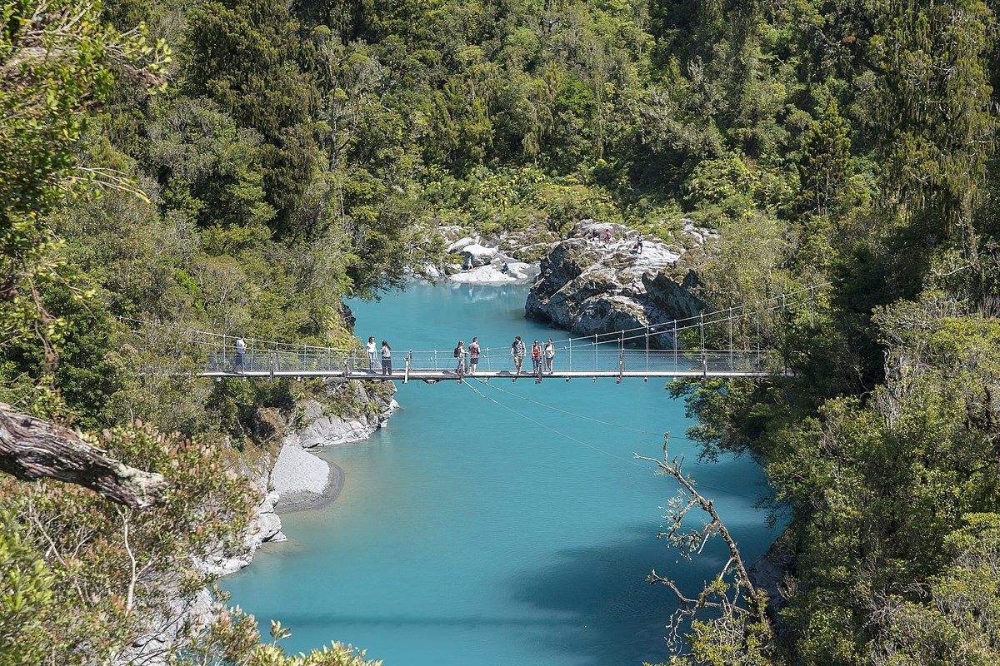

Hokitika Gorge
Hokitika Gorge is a must-see on New Zealand’s West Coast, famous for its stunning turquoise glacial waters, lush native forest, and scenic swing bridge. Just a short walk from the car park, this hidden gem offers unforgettable views and a peaceful escape into nature — perfect for photographers, hikers, and anyone seeking a taste of the South Island’s wild beauty.
Waitomo Glowworm & Cave Explorer Small Group Tour

Step into a world of wonder on the Waitomo Glowworm & Cave Explorer Small Group Tour, where nature lights up the darkness. Drift through ancient limestone caves as thousands of glowworms twinkle overhead like stars, creating a magical, otherworldly experience you’ll never forget. With a small group size, you’ll enjoy a more personal and immersive journey — perfect for curious explorers, families, and anyone looking to uncover one of New Zealand’s most unique natural attractions.